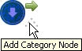
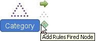
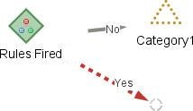
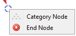
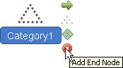
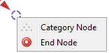
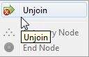
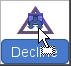
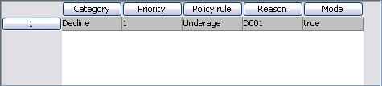
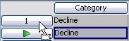

Policy Rule Sets
A Policy Rule Set is used to define the Decision Category Flow used in a Decision Setter to ensure that all the required Policy Rules are processed for each record. At every Decision Category point in the Decision Category Flow of the Policy Rule Set, one or more Policy Rules are applied. If one or more conditions contained in the Policy Rules are true for a record, the text and code describing each condition will be returned and the record will be directed to the next relevant Decision Category point in the flow.
The Decision Setter uses the priority of each Decision Category defined in the Policy Rule Set to determine the ranking of the returned Decisions. Where multiple rules with equal priority are triggered in a given Decision Category, they are returned in the order that they are processed. The top ranked Decision will be the final decision that is assigned to the record at runtime.
A user can either create a Policy Rule Set that is referenced by the Decision Setter, so it can be shared with other Decision Setters, or the user can create an embedded Policy Rule Set that can only be used in the Decision Setter within which it was created.
The decision category flow definition area of the Policy Rule Set editor is used to define the decision category flow to ensure that all the required Policy Rules are processed for each record. When defining a decision category flow the user may use the following:
 Start node - the point in the flow where processing starts. A decision category flow must always have a start node.
Start node - the point in the flow where processing starts. A decision category flow must always have a start node.
 Category node - a point in the flow where Decision Categories are applied. Policy Rules are applied to categories in the flow.
Category node - a point in the flow where Decision Categories are applied. Policy Rules are applied to categories in the flow.
 Rules Fired node - a point in the flow where Yes or No pathways can be used. When a record is processed through Policy Rules that have been applied to a Decision Category, the Rules Fired node is used to direct the record to the next relevant Decision Category depending on which outcome (True or False) has been triggered.
Rules Fired node - a point in the flow where Yes or No pathways can be used. When a record is processed through Policy Rules that have been applied to a Decision Category, the Rules Fired node is used to direct the record to the next relevant Decision Category depending on which outcome (True or False) has been triggered.
Connecting Link - use to connect two nodes to each other in the decision category flow
 End Node - the point in the decision category flow where processing ends. A decision category flow must have an end node.
End Node - the point in the decision category flow where processing ends. A decision category flow must have an end node.
A Policy Rule Set can be created from the Explorer window.
| You will only be able to add a component type that has been allowed for the selected folder. If it is not allowed it will not be listed and therefore cannot be created. |
To create a Policy Rule Set
- From the Explorer window right click at the required folder level and select Add component.
- Select Policy Rule Set.
- In the Create component dialog enter the name of the Policy Rule Set.
- Select the Open new components in component editor check box.
- Click on the OK button.
The Policy Rule Set editor will open, allowing you to define a Policy Rule Set.
The Policy Rule Set name will be listed in the Explorer window under the selected folder level. The component is identified by the icon.
If you do not wish the editor to open, keep the check box de-selected. To open the Policy Rule Set, in the Explorer window, right click on the Policy Rule Set and select Open.
| The Policy Rule Set can only be used in a Decision Setter. The user can reference or embed Policy Rule Sets in Decision Setters. |
To define a Decision Category Flow
- With the Policy Rule Set editor open, left click on the Start Node and click on the Add Category Node icon.

The Category will be added to the Decision Category Flow and automatically linked to the Starting Node.
or from the Palette, within the Policy Rule Set editor, drag and drop the Category onto the editor.
- Repeat step 1 as required to add the Category nodes you require to the Decision Category Flow.
- Left click on a Category node and click on the Add Rules Fired icon

The Rules Fired icon will be added to the Decision Category Flow and automatically linked to the Category.
or from the Palette, within the Policy Rule Set editor, drag and drop a Rules Fired icon onto the editor.
- From the Palette either, drag and drop a Category onto the end point of the pathway.

Or right click on the pathway and select Category Node to add a category.
- Repeat step 4 to assign a Category to both end points of the pathways.
- To add an End Node:
- Left click on the first Category node and click on the Add End node icon.

The End icon will be added to the Decision Category Flow and automatically linked to the Category.
- From the Palette, within the Policy Rule Set editor, drag and drop an End node icon onto the editor.
- On the pathway, right click and select End Node.

The End Node is assigned to the end of the pathway.
| To remove the Category Node from the pathway, right click on the pathway and select Unjoin.  The Category Node will still exist, but it will no longer be connected to the pathway. |
| To remove the End Node from the pathway, right click on the pathway and select Unjoin. The End Node will still exist, but it will no longer be connected to the pathway. |
- Either repeat step 6 to add an End node to the second Category, (there will now be two End nodes) or left click on the second Category node and click on the Connecting Link arrow and drag the arrow to the End node icon to connect it. Using this second method will result in the Decision Category Flow only containing one End node.
A Category node is an object in the Decision Category Flow where Decision Categories are applied.
To assign a Decision Category to a Category node
- With the Policy Rule Set editor open and a Category node added to the Decision Category Flow, right click on the Category node and select Assign Category.
The Category Finder dialog will be opened. - Click on the Expand + button to list all the Decision Categories contained in a Decision Set from your solution.
- Select the Decision Category you require.
- Click on the OK button.
The Category Finder dialog will close and the Decision Category will be applied to the Category node. The name of the Category will be updated to reflect the Decision Category that has been assigned. Repeat as required.
A Decision Category node can be deleted from a Policy Rule Set.
| If you delete a Decision Category node, the Decision Category and Policy Rules that were attached to it will also be removed from the Policy Rule Set. |
To delete a Decision Category
- With the Policy Rule Set editor open, right click on a node and select Delete or select a number of nodes using your cursor, right click and select Delete.
A Confirmation dialog will be displayed. - Click on the Yes button.
The Decision Category and Policy Rules that were attached to the Category node will be removed from the Decision Category Flow and Policy Rule Set.
A Policy Rule is a Boolean Expression (rules or conditions) against which a record is processed and an outcome (true or false) is assigned. When a record is passed through the Policy Rule Set at each Decision Category point in the Decision Category Flow one or more Policy Rules are applied. If one or more of the conditions contained in the Policy Rules are true for the record, the text and code describing each condition will be returned; the record will then be directed to the next relevant Decision Category point in the Decision Category Flow. Where multiple rules are triggered in a given Decision Category (with equal priority), they are returned in the order that they are processed. The user will only be able to add valid Policy Rules to a Decision Category. A valid Policy Rule is a Policy Rule that has a name, a valid rule, a selected outcome (true or false) if the rule is satisfied and a Reason Code that will be returned to the record if the rule is triggered.
To add a Policy Rule to a Decision Category
- With the Policy Rule Set editor open and a Category node added, click on the Resources window.
- Click on the Expand + button to list all of the available Policy Rules.
- Drag and drop the required Policy Rule onto the Decision Category.

- The Policy Rule will be assigned to the Decision Category and listed in the Policy Rules area of the Policy Rule Set editor. For example:

- Repeat steps 3 to 4 to assign more Policy Rules to the Decision Category.
|
Multiple Policy Rules can be added to the Decision Category using either the Shift key or the Ctrl key on your keyboard. |
| To open or delete a Policy Rule from the Policy Rules area, right click on the Policy Rule and select Open or Delete, as appropriate, from the context menu. |
A Policy Rule can be deleted from the Decision Category Flow.
To delete a Policy Rule
- With the Policy Rule Set editor open, in the Policy Rules area, right click on the Policy Rule that you wish to delete.
- Select Delete.
The Policy Rule will be deleted from the Decision Category Flow.
A Decision Category must have Policy Rules assigned to it for it to be valid.
A Policy Rule is a Boolean Expression (rules or conditions) against which a record is processed and an outcome (true or false) is assigned. When a record is passed through the Policy Rule Set at each Decision Category point in the Decision Category Flow one or more Policy Rules are applied. Where multiple Policy Rules are triggered in a given Decision Category (with equal priority), they are returned in the order that they are processed.
To change the processing order/priority order of Policy Rules
- With the Policy Rule Set editor open, in the Policy Rules area, click on the row number of the Policy Rule you wish to move.
A green arrow will be displayed.
- Drag and drop this to the position you require.


{kind=link}
{kind=link}
{kind=link}
{kind=link}
{kind=link}
{kind=link}
{kind=link}
{kind=link}
{kind=link}
{kind=link}
{kind=link}
{kind=link}
{kind=link}
{kind=link}
| You can only change the priority order of Policy Rules assigned in a single Decision Category. |
- Repeat steps 1 to 2 as required.
Policy Rules must be assigned to each Decision Category for the Policy Rule Set to be valid.
A Policy Rule Set can be tested.
To perform an interactive test on a Policy Rule Set
- From the Explorer window at the required folder level, locate the correct Policy Rule Set.
- Right click and select Test.
- Alternatively, from within the Policy Rule Set editor click on the test icon to launch the Interactive Tester
Manually enter data into the relevant fields for the input characteristics using the Interactive Tester.
To perform a batch test on a Policy Rule Set
To test a Policy Rule Set using data from a .csv file, from the Explorer window, right click on the component and select New Test Project to use the Batch Tester.